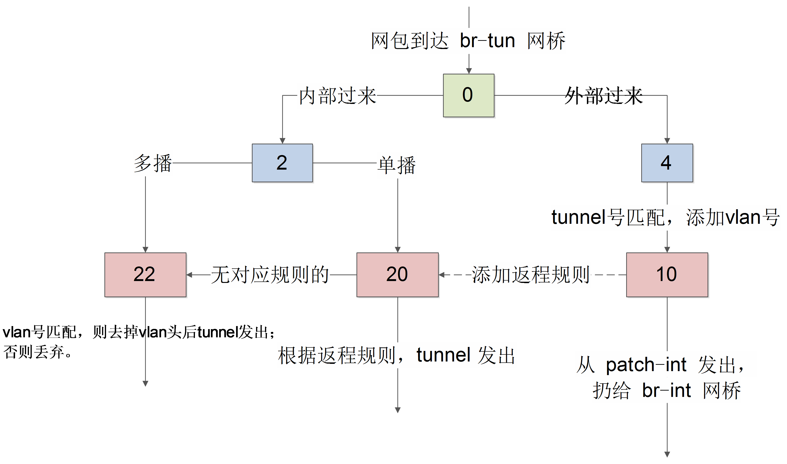

br-tun
跟计算节点类似，br-tun 作为虚拟化层网桥。
要将内部过来的网包进行合理甄别，内部带着正确 vlan tag 过来的，从正确的 tunnel 扔出去；外面带着正确 tunnel 号过来的，要改到对应的内部 vlan tag 扔到里面。
包括两个接口，跟其它接点形成 tunnel 的 vxlan-xxx 端口，以及跟 br-int 互连的 patch-int 端口。
其中，端口 br-tun 是内部端口，vxlan-0a00644d 这样的端口是向其它节点发包时候的 VXLAN 隧道端点，patch-int 端口通过一条管道连接到 br-int 上的 patch-tun 端口。
查看 br-tun 上的转发规则。
|
这些规则跟计算节点上的 br-tun 网桥规则类似，组成如下图所示的转发逻辑。

表 0
先看 table0 中的规则
从 1 端口（patch-int）进来的网包，扔给表 2 处理，从 2 端口（vxlan-0a00644d）进来的网包，扔给表 4 处理。即一个处理来自内部 br-int 的（这上面挂载着所有的网络服务，包括路由、DHCP 等），一个处理来自外面的 VXLAN 隧道的。
表 2
对于内部包，表 2 中规则为
即里面过来的单播包，扔给表 20 处理；多播和广播包，扔给表 22 处理。
表 3
丢弃所有包。
表 4
对于外部来的数据，表 4 中规则为
匹配给定的 tunnel 号，添加对应的 vlan 号，扔给表 10 去学习一下后扔到 br-int 网桥。
表 10
|
主要作用是学习外部（从 tunnel）进来的包，往表 20 中添加对返程包的正常转发规则，并且从 patch-int 扔给 br-int。
使用了 openvswitch 的 learn 动作。该动作能根据处理的流来动态修改其它表中的规则。
具体来看 learn 规则。
table=20说明是修改表 20 中的规则，后面是添加的规则内容；NXM_OF_VLAN_TCI[0..11]，匹配跟当前流同样的 VLAN 头，其中 NXM 是 Nicira Extensible Match 的缩写；NXM_OF_ETH_DST[]=NXM_OF_ETH_SRC[]，包的目的 mac 跟当前流的源 mac 匹配；load:0->NXM_OF_VLAN_TCI[]，将 vlan 号改为 0；load:NXM_NX_TUN_ID[]->NXM_NX_TUN_ID[]，将 tunnel 号修改为当前的 tunnel 号；output:NXM_OF_IN_PORT[]，从当前入口发出。
表 20
|
其中，第一条规则就是表 10 学习来的结果。对于 vlan 号为 1，目标 mac 是 fa:16:3e:83:95:fa（之前，我们从虚拟机内 ping 10.0.0.1，这个 mac 作为源 mac 从 tunnel 来过）的网包，去掉 vlan 号，添加当时的 vxlan 号，并从 tunnel 发出。
对于没学习到规则的网包，则扔给表 22 处理。
表 22
|
表 22 检查如果 vlan 号正确，则去掉 vlan 头后从 tunnel 扔出去。